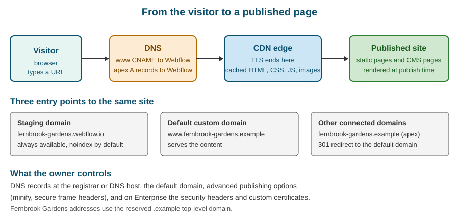

Domains, Hosting and Publishing Options
|
This content was generated with the assistance of AI and should be verified against the official documentation before being relied on in production. |
This page describes Webflow as it was on 2026-10-28, the date on which its facts were checked against the official documentation. Webflow is a software-as-a-service product with no version numbers, so what follows is dated rather than versioned. DNS values, certificate authorities and plan limits are exactly the kind of detail that Webflow changes without notice, so wherever this page names a record or a limit it also says where the current value is shown. Plans are named by tier only (Starter, Basic, Premium and Enterprise for a Site plan, and the Ecommerce tiers); this page never quotes prices, and Plans, Workspaces, Seats and Roles explains which tier unlocks what.
Publishing is the moment a design and its content stop being a private working copy and become something a visitor can type into a browser. Everything between the Publish button and the visitor is covered here: the addresses that reach the site, the DNS records that point those addresses at Webflow, the certificate that makes the connection secure, the network that serves the files, the options that change the files Webflow writes, and the Enterprise features that change who controls the headers and the servers. The mechanics of the Publish button itself, scheduled publishing and publishing individual pages are in Publishing and Scheduling; this page is about where the published site lives and how people find it.
The running example is Fernbrook Gardens, the fictitious botanical garden. Its team already runs a site on an old
host at www.fernbrook-gardens.example, and it is moving that address to Webflow. Every domain on this page uses the
reserved .example top-level domain, which can never be registered, so none of the names collides with a real site. The
page follows the migration from the first DNS record to the day the old host is switched off.

Addresses a Webflow site can have
A Webflow site can answer on several addresses at the same time, and understanding which is which prevents most of the confusion that surrounds domains.
The staging domain
Every site gets a free address under webflow.io, built from the site’s short name: for Fernbrook Gardens that is
fernbrook-gardens.webflow.io. This is the staging domain (the Help Center also calls it the Webflow subdomain). It
exists from the moment the site is created, it works on every plan including the free Starter tier, and it is the place
to review work before the production domain is touched. Publishing to it is a separate checkbox in the publish dialog, so
a team can publish to staging many times and to production once.
Three properties matter.
-
It is a real, publicly reachable site. Anyone who knows the address can open it, so staging is not private. To keep reviewers out, use the password protection described in Password Protection and Site Search, not obscurity.
-
It is not meant to be indexed. Webflow keeps the staging domain out of search results, because two public copies of one site would compete with each other. Never link to
webflow.ioaddresses from marketing material. -
It is the only address on the Starter tier. A free Starter site cannot be connected to a custom domain at all; the free tier is for learning and for prototypes that stay on the staging domain.
Custom domains
A custom domain is an address you own and register elsewhere (or buy through Webflow), such as
www.fernbrook-gardens.example. Connecting one needs a paid Site plan on the site, ownership of the domain, and access
to its DNS settings. A site can have several custom domains connected, and Webflow distinguishes the default domain
from the others.
The default domain
When more than one custom domain is connected, one of them is marked as the default. The default domain serves the
content; every other connected domain answers with a permanent redirect to it. This is how Webflow avoids the duplicate
content problem: fernbrook-gardens.example (the apex) and www.fernbrook-gardens.example both reach the site, but
search engines only ever see one canonical address, and visitors always land on it. The choice of default domain is made
in Site settings under Publishing and Production by selecting Make default next to the preferred domain.
The redirect is automatic, so a team should never build a second, manual redirect from the non-default domain to the default one; the two would fight each other. Manual redirects are for old paths, as described in Redirects and Site Migration.
Fernbrook Gardens chooses www.fernbrook-gardens.example as its default. The reasons are given in the next section.
DNS in one page
The Domain Name System maps names to addresses. Webflow does not require that you move your domain to Webflow; it requires that a few DNS records at your registrar or DNS host point at Webflow. Four record types appear in this process.
| Record | Meaning | Use for Fernbrook Gardens |
|---|---|---|
A |
Maps a name to an IPv4 address |
The apex name |
CNAME |
Makes one name an alias of another name |
|
TXT |
Holds arbitrary text, used for ownership proofs |
A verification record on the |
CAA |
Says which certificate authorities may issue certificates for the domain |
Only if one already exists; see the SSL section |
Apex and www
The apex (also called the root or naked domain) is the bare name, fernbrook-gardens.example. The www name is a
subdomain, www.fernbrook-gardens.example. The DNS standard does not allow a CNAME at the apex, because the apex must
hold the zone’s own SOA and NS records and a CNAME cannot coexist with other records. That is why Webflow asks for A
records at the apex and a CNAME on www.
This difference has a practical consequence that shapes the default-domain choice.
-
An apex default depends on A records. Visitors reach the site through fixed addresses, which are stable but cannot follow Webflow if it ever moves the infrastructure behind them. Webflow’s Quick connect article notes that making the root domain the default needs a different DNS setup from the one used for
www. -
A www default depends on a CNAME. The alias lets Webflow change the addresses behind its proxy hostname without any action on your side, and it is the setup Webflow’s documentation presents as the standard path. DNS hosts that proxy traffic, such as Cloudflare’s DNS service, also behave better with a
wwwdefault.
For these reasons Fernbrook Gardens uses www as the default and lets the apex redirect to it. Any registrar that offers
"web forwarding" or an "ALIAS/ANAME" record at the apex can do the same job, but the A-record approach needs nothing
extra and is the one Webflow documents.
The records Webflow asks for
In Site settings, Publishing, Production, choosing Add a custom domain and then Manually add domain shows the exact records for the domain being connected. Treat that screen as the source of truth. In outline, a manual connection of the Fernbrook Gardens domain asks for:
| Type and name | Value | Purpose |
|---|---|---|
A on |
The two IPv4 addresses shown in Site settings |
Sends apex traffic to Webflow; two records give redundancy |
CNAME on |
|
Makes |
TXT on |
A one-time verification string beginning with |
Proves that the person connecting the domain controls its DNS |
Two cautions apply to the table. First, Webflow has stated that it is updating its DNS infrastructure and that sites
created on or after a given date in 2025 may show different records from older sites, so the values on the page come
from Site settings and not from a tutorial, a blog post or this table. Second, some DNS hosts require a trailing dot at
the end of a CNAME target (proxy-ssl.webflow.com.); if the host adds it for you, do not type it twice.
A subdomain other than www is connected in the same way with a single CNAME and the same TXT verification record. The
Help Center recommends avoiding subdomain names that begin with ad or ads, because many ad blockers treat them as
advertising and may stop the site from loading. A Fernbrook example is the kiosk reading site at
kiosk.fernbrook-gardens.example, which uses its own CNAME.
Quick connect versus manual connect
Webflow offers two ways to connect a domain.
-
Quick connect signs in to a supported DNS provider on the owner’s behalf and writes the records automatically. It is the faster option when the DNS host is supported, and it removes copy-and-paste mistakes. The owner authorizes Webflow to make the change, so use it only with an account you are entitled to authorize.
-
Manual connect shows the records and leaves their creation to the owner. It works with any DNS host, and it is the right choice when DNS is managed by an infrastructure team or a hosting provider.
A third path is to buy the domain through Webflow, which then manages the connection; the Help Center article "Buy a custom domain through Webflow" covers it, including the case where a default domain is set before a new domain is added. Buying through Webflow is convenient for a small site, but a domain that matters to the organization is usually better registered by the organization itself, so ownership does not depend on one vendor’s account.
Clearing old records first
Before adding the Webflow records, delete any existing A and CNAME records for the same names, otherwise the old host and
the new one answer alternately and the site seems to flip between versions. The www name cannot have both a CNAME and an
A record. Leave unrelated records alone, in particular:
-
MX records that deliver email for the domain. Moving a website must not move email; the garden’s visitor-services mailbox keeps working because the MX records are never touched.
-
TXT records for email authentication (SPF, DKIM, DMARC) and for other services' domain verification.
-
Records on other subdomains, such as a ticketing system on
tickets.fernbrook-gardens.example.
Cloudflare and other proxying DNS hosts
If the domain’s DNS is hosted on a service that can proxy HTTP traffic, as Cloudflare’s DNS can, set each of the Webflow records to DNS only. Webflow’s documentation states that otherwise the proxy of the DNS host sits in front of Webflow’s own proxy, the two interfere, and typical symptoms are certificate errors (a 525 SSL handshake failure on Cloudflare) and certificate renewals that never complete. The same applies to a CDN or WAF placed in front of the site by hand: the supported ways to add an edge layer are the Enterprise features described later, and Reverse Proxy and Custom Hosting explains the self-managed proxy that Webflow permits only in narrow conditions.
Checking the records
DNS changes can take up to 48 hours to reach every resolver, though they usually finish within a few hours. The time depends on the TTL (time to live) of the old records, which tells resolvers how long they may keep the old answer. The check is easy to script, and a command-line lookup is more reliable than a browser, which caches aggressively.
# Does the www name resolve to Webflow's proxy hostname?
dig +short CNAME www.fernbrook-gardens.example
# Which addresses does the apex use?
dig +short A fernbrook-gardens.example
# Is the ownership proof visible?
dig +short TXT _webflow.fernbrook-gardens.example
# Ask a specific public resolver, bypassing the local cache
dig +short CNAME www.fernbrook-gardens.example @1.1.1.1After the records propagate, Site settings shows each domain’s status, and Webflow provisions the certificate. The connection is complete when the domain shows as connected and the site loads over HTTPS on it.
Connecting a domain without downtime
A new site on a new domain can be connected at any time. Moving a live domain from an old host is different, because the cut-over must be quiet. The procedure below is the one Fernbrook Gardens follows; it is also a good checklist for any migration.
| Step | Action |
|---|---|
1 |
Build and review the site on the staging domain. Publish to staging only, until content and design are approved. |
2 |
Lower the TTL of the existing DNS records to a few minutes, at least one old TTL period before the cut-over, so that resolvers drop the old answer quickly when the change happens. |
3 |
Add the 301 redirects for every old URL that changes, in Site settings, before the cut-over. Redirects are evaluated in the order they are listed, and Webflow recommends at most 1,000 of them. The old host’s paths that no longer exist are worse found out by visitors than by the team. |
4 |
Add the custom domain in Webflow and select the default domain. Webflow shows the records to create and waits for them. |
5 |
In DNS, delete the old A and CNAME records for the names being moved and add the Webflow ones, in one change if the DNS host allows it. Leave MX and TXT records untouched. |
6 |
Wait for the domain to show as connected and for the certificate to be issued, then publish the site to the production domain. |
7 |
Check both names ( |
8 |
Submit the new sitemap to the search consoles, and keep the old host running for a few days in case a resolver still points at it. |
9 |
Raise the TTL back to a normal value and decommission the old host. |
The order of steps 3 and 4 matters. A redirect added after the cut-over is a redirect that visitors and crawlers have already missed. The long-form advice on migrating, including a redirect map and a sitemap check, is on Redirects and Site Migration.
SSL and HTTPS
Every Webflow site hosted on a paid Site plan includes a certificate for each connected domain, issued and renewed automatically at no extra cost. There is nothing to buy, upload or install, which is one of the points on which Webflow differs from a self-hosted server where the owner is responsible for the certificate lifecycle.
How it works
When a domain’s records point at Webflow, Webflow requests a certificate for it from a public certificate authority and installs it on the edge that terminates the visitor’s TLS connection. Renewal happens automatically as long as the DNS records keep pointing at Webflow and the domain keeps resolving to the Webflow servers. If the records are removed or repointed, renewal cannot succeed, and the certificate will eventually expire.
Visitors are sent to the HTTPS version of the site; there is no plain HTTP site to maintain. Pages should therefore never
mention http:// URLs for the site’s own resources, and embedded third-party content must be served over HTTPS as well,
or the browser reports mixed content.
CAA records
A CAA record lists the certificate authorities that may issue certificates for a domain. If the domain has no CAA records, any authority may issue, and Webflow needs no action. If CAA records exist (they often do on domains managed by a security-minded IT department), they must explicitly allow Webflow’s certificate authorities. Webflow’s Help Center article "Configure CAA records for Webflow SSL" lists the authorities (Let’s Encrypt and Google Trust Services) and the exact records to add, and says that without them Webflow cannot issue or renew certificates for the domain, which can make the site insecure or unreachable.
The check is one command against the apex and against every subdomain in use.
dig +short CAA fernbrook-gardens.example
dig +short CAA www.fernbrook-gardens.exampleAn empty answer means there is no restriction. A non-empty answer must include the authorities Webflow names; add them to the existing set instead of replacing it, so that certificates the organization uses for other services keep working.
When the certificate does not appear
The usual causes, in order of likelihood, are:
-
The DNS records are wrong, incomplete or still propagating. Re-run the lookups from the previous section.
-
A CAA record blocks the authority.
-
A proxy sits in front of Webflow (a proxied Cloudflare record, a CDN, a web application firewall) and hides the records or breaks the validation.
-
The domain is connected on two sites, or to another account, and the ownership verification is held by the other.
-
The registrar’s name servers are not the ones the DNS records were edited on, so the changes never took effect.
The symptom is typically a browser warning about an invalid certificate, or an ERR_SSL_PROTOCOL_ERROR page even though
the domain shows as connected. The fix is almost always in DNS, not in Webflow. The Help Center article "SSL hosting"
describes the state and how to retry.
HSTS
HTTP Strict Transport Security tells browsers to use only HTTPS for a domain for a stated time. On sites that are not on Enterprise, Webflow applies HSTS automatically and it cannot be switched off; Enterprise owners can enable or disable it among the advanced publishing options. A domain that has been served with HSTS must keep a valid certificate for as long as browsers remember the instruction, so a domain should be moved off Webflow gradually and never in a hurry.
Custom certificates
Enterprise customers can upload their own certificate where policy demands a particular authority or an extended validation certificate. This is an Enterprise feature, arranged through the sales team and the account’s contact; the rest of the plans use the automatic certificates only.
The hosting layer
Webflow hosting is fully managed. The customer does not provision servers, scale for traffic spikes, patch a runtime or renew software, and has no shell, file system or process to look after. The Webflow hosting overview in the Help Center says that sites are stored and delivered through Cloudflare’s network, which also provides DDoS and bot protection. The architectural picture is in Introduction and Architecture; the consequences for a site owner follow.
What is actually served
At publish time Webflow renders every static page and every CMS-driven page to HTML and writes the style sheet and scripts. A visitor’s request is answered by an edge node that holds a copy of those files, so the typical request touches no application server and no database. This is the reason Webflow sites are fast by default, and also the reason for three behaviours that surprise people coming from a CMS that renders on every request.
-
Content changes need a publish. Editing a CMS item changes the working copy. The live page changes when the item (or the site) is published, because only then is the page re-rendered and the edge cache refreshed.
-
There is no server-side code on the page. Nothing in a page runs on Webflow’s servers per request. Logic for forms, search or personalization is handled by Webflow’s built-in features, by client-side JavaScript, by a webhook receiver or by an application on Webflow Cloud or elsewhere.
-
Caching is handled for you. Publishing refreshes the cached copies for the published domains. Teams should not add their own cache rules in front of the site, which is a frequent cause of "I published but the old page is still there".
The Content Delivery API used for headless reading has its own cache lifetime, which is covered in Content Delivery API and Headless; it does not apply to the published pages.
Regions and latency
Because pages are served from many edge locations, a visitor in Madrid and a visitor in Berlin both get the nearest copy, and the Spanish and German locales of Fernbrook Gardens need no separate hosting. The sub-section’s page on Localization explains how locale subdirectories are routed on the same domain.
Uptime, status and the SLA
Webflow publishes the live state of the platform at https://status.webflow.com, which lists components such as the Dashboard, hosted sites, the CMS and the APIs, together with the history of incidents. It supports email and other subscriptions, so the person who runs the site should subscribe: when the site misbehaves at 09:00 on the garden’s opening day, the first question is whether it is Webflow or the site.
A contractual uptime commitment is an Enterprise feature: the Enterprise plan includes a 99.99 percent uptime SLA. Other tiers have no SLA, though they run on the same infrastructure.
Bandwidth
Each Site plan includes a monthly bandwidth allowance, which counts the data served to visitors from the CDN, including images, fonts, video files and scripts. The allowance grows with the tier, and the limits (which Webflow has changed more than once) are shown on the pricing page and in Site settings under Plans and Billing; this page does not repeat them. What matters operationally is how exceeding them behaves.
-
Surge protection. A single month above the allowance does not immediately upgrade the plan. If usage returns to normal the following month, nothing happens. If the site stays above the allowance for two consecutive billing months, Webflow moves it to the tier (or bandwidth add-on) that fits the usage at the start of the next billing cycle. The Help Center article "Surge protection for overages" describes the rule.
-
Bandwidth add-ons. Sites on higher tiers can buy additional bandwidth in steps before an automatic move is made.
-
Enterprise. Enterprise bandwidth is negotiated in the contract, not pinned to a published number.
The best way to stay within the allowance is to send fewer bytes: convert and size images, avoid autoplaying background video, host large downloads on a service built for them, and load fonts sparingly. Those techniques are in Performance Optimization and Images and Assets. A small site such as Fernbrook Gardens, with optimized photographs, will remain far below any allowance; the risk is a viral seasonal video served directly from Webflow’s asset storage.
Webflow also reports usage in the dashboard, and the Analyze add-on described in Analyze and Optimize shows traffic, which helps correlate a bandwidth spike with a page.
Advanced publishing options
Site settings, Publishing tab, has an Advanced publishing options section, also reachable from the publish dropdown in the Designer. These options change the files Webflow writes at publish time and the headers it sends. The default for each is chosen by Webflow; the section is where a team turns them on deliberately.
| Option | What it does |
|---|---|
Minify HTML |
Removes whitespace and comments from the HTML at publish time. It shrinks the page and also removes the spacing artefact
that appears between |
Minify CSS |
Removes whitespace and comments from the style sheet. The class names and the rules are untouched. |
Minify JavaScript |
Minifies the scripts Webflow writes. Webflow turned minification of JavaScript on by default for new sites; see the product updates for the date. |
Secure frame headers |
Adds headers to published pages that tell browsers not to display the pages inside frames on other origins, which blocks clickjacking. It cannot be switched off on sites with Ecommerce enabled. |
Async JavaScript |
Loads the site’s JavaScript asynchronously so that it does not block rendering. It needs a paid Site or Workspace plan, and scripts that other code expects to find already loaded must be tested after switching it on. |
HSTS |
Configurable on Enterprise sites only; on other sites HSTS is always on. |
Why minification is a safe default
Each of the minify options works on the output that Webflow itself generated, so it cannot break a class name or a custom attribute. The cost is that the live page source is less readable, which matters to developers who inspect the published markup. The right workflow is to debug on the staging domain with minification off and publish to production with it on, or simply to use the Designer’s own panels, which always show the unminified structure. Custom code placed in the head or footer is not rewritten by the minifier, so large scripts should be minified before being pasted in; see Custom Code, Head, Footer and Embeds.
What secure frame headers change
The option adds X-Frame-Options-style headers to every published page. Its effect is to forbid the pages from being
embedded in an iframe on another origin. For most sites this is exactly what is wanted, but it breaks anything that
legitimately embeds the site: a preview tool that displays the site in a frame, a partner page that shows the Fernbrook
events calendar in an iframe, or a Webflow Designer Extension that loads a preview. The Fernbrook team keeps the option
on and, for the events calendar, gives the partner a link instead of an embed. If a page really must be embeddable,
switch the option off and accept the risk, or move to Enterprise, where a Content-Security-Policy frame-ancestors
directive can allow specific origins only.
Security headers on Enterprise
Browsers support many response headers that harden a site, and a security review for an organization usually asks for them. On the Starter to Premium tiers Webflow sends a fixed, sensible set (HSTS and, if enabled, the secure frame headers) and does not let the owner add headers. On Enterprise, the custom security headers feature lets an owner configure them. Webflow’s documentation says the feature is turned on per site by contacting the sales team, and lists the headers it supports, including:
-
Content-Security-Policy, which restricts where scripts, styles, images and frames may load from; -
X-Frame-Options, which controls framing; -
Referrer-Policy, which controls how much of the page address is sent to other sites; -
X-Content-Type-Options, which stops the browser from guessing content types; -
Strict-Transport-Security, which controls HSTS as described above.
The documentation notes that the Permissions-Policy header is not supported at the time of this check, so a
requirement for it must be met in another way.
A Content-Security-Policy deserves particular care on Webflow because the platform’s own scripts, the Webflow-hosted asset domain, form handling and every third-party embed (analytics, maps, video, chat) must appear in the policy, and the Designer and the preview canvas have to remain loadable. The recommended method is the one used for any strict policy: start in report-only mode, collect the violations, widen the policy to cover what is legitimate, and only then enforce it. A policy that is enforced from the first day usually breaks the editing experience before it helps security.
Sites that are not on Enterprise and need a header they cannot set have two options, and neither is simple. A Cloudflare-style reverse proxy can add headers, but Webflow imposes conditions on that arrangement, as explained in Reverse Proxy and Custom Hosting. Otherwise, the requirement is a reason to review the plan.
Enterprise custom hosting
Besides the standard hosting, Webflow offers an arrangement called Webflow Custom Hosting for organizations with infrastructure or compliance needs that managed hosting does not meet, such as a requirement to serve the site from the organization’s own cloud account, behind its own web application firewall or on its own CDN configuration. Webflow’s Help Center has an FAQ for it. The rules of the arrangement, such as the headers that are implemented at the CDN layer (a Content-Security-Policy through CDN response headers or a web-server configuration, with a meta-tag fallback, report-only mode and violation reporting) and the division of responsibilities, are in that FAQ and in the contract. This is the supported alternative to hand-built reverse proxies, and the contract with the sales team settles the details. Because it changes who operates the serving layer, the organization’s own team becomes responsible for the certificate, caching, availability and security of that layer.
Webflow Cloud, covered in Webflow Cloud, is a different thing: it runs server-side
applications such as the Fernbrook Visit Planner mounted at /planner on the same domain. Custom Hosting is about the
site itself; Cloud is about applications next to it.
Exported code is not hosted by Webflow
Webflow can export a site’s code as a zip archive on suitable plans, and that archive can be put on any web host. The export contains the static pages, style sheet and scripts, and not the CMS, forms, password protection, search or Ecommerce, all of which depend on Webflow’s hosting. A team that exports a site takes responsibility for domains, DNS, certificates and caching themselves; none of this page applies to it except the DNS fundamentals. The subject has its own page, Code Export and Portability, and the alternative of keeping Webflow as the editor while publishing elsewhere is part of the hybrid choices in DevLink and Export.
Working with domains through the Data API
The Data API can list the custom domains of a site and publish to them, which is useful for automation, for audits of
many sites and for release scripts. Reading domains needs the sites:read scope, and publishing needs sites:write.
Scopes and tokens are explained in
Data API Authentication and Scopes. Examples use a
Developer workspace site, a placeholder token and a placeholder site ID.
export WEBFLOW_TOKEN="YOUR_API_TOKEN_PLACEHOLDER"
export SITE_ID="SITE_ID_PLACEHOLDER"
# List the custom domains connected to the Fernbrook Gardens site
curl -s "https://api.webflow.com/v2/sites/${SITE_ID}/custom_domains" \
-H "Authorization: Bearer ${WEBFLOW_TOKEN}"Source: Data API: Get Custom Domains
The response is a JSON object with a customDomains list; each entry carries an id and a url. The IDs are what the
publish call needs.
# Publish to the staging domain and one custom domain
curl -s -X POST "https://api.webflow.com/v2/sites/${SITE_ID}/publish" \
-H "Authorization: Bearer ${WEBFLOW_TOKEN}" \
-H "Content-Type: application/json" \
-d '{
"publishToWebflowSubdomain": true,
"customDomains": ["CUSTOM_DOMAIN_ID_PLACEHOLDER"]
}'Source: Data API: Publish Site
The publish call is queued, so it returns before the pages are live, and it is rate limited separately and strictly, so a script must not publish in a loop. The behaviour, the limits and the single-page option are covered in Publishing and Scheduling.
A short TypeScript helper shows how a release script confirms that every domain it expects is connected before it
publishes. It uses the fetch function of Node.js 20 and later, and reads the token from the environment.
// check-domains.ts: fail the release if an expected domain is not connected
const expected = [
"www.fernbrook-gardens.example",
"fernbrook-gardens.example",
];
interface CustomDomain {
id: string;
url: string;
}
async function listDomains(siteId: string, token: string): Promise<CustomDomain[]> {
const response = await fetch(
`https://api.webflow.com/v2/sites/${siteId}/custom_domains`,
{ headers: { Authorization: `Bearer ${token}` } },
);
if (!response.ok) {
throw new Error(`Webflow answered ${response.status}`);
}
const body = (await response.json()) as { customDomains: CustomDomain[] };
return body.customDomains;
}
const siteId = process.env.WEBFLOW_SITE_ID ?? "";
const token = process.env.WEBFLOW_TOKEN ?? "";
const connected = (await listDomains(siteId, token)).map((d) => d.url);
const missing = expected.filter((host) => !connected.includes(host));
if (missing.length > 0) {
console.error(`Not connected: ${missing.join(", ")}`);
process.exit(1);
}
console.log("All expected domains are connected.");Source: Data API: Get Custom Domains
The URL returned for a domain may or may not include the www prefix depending on how it was added, so a real script
should normalize host names before comparing them.
Publishing events
Webflow can notify a webhook receiver when a site is published, so that an external system can react: purge a cache the
team added in an external system, rebuild a headless front end or post a message to the team. The site_publish event
carries the site and the domains published. The receiver, signature verification and retries are described in
Webhooks. For the garden, the event triggers a rebuild of the Next.js visitor kiosk, which
reads the Journal through the Content Delivery API.
What differs from the older book
The book Webflow by Example (2021) closes with a chapter on publishing, which is a good introduction to the idea of staging and production, and it has been overtaken in several places.
-
Its account and site plans (Lite, Pro, Team; Basic, CMS, Business) have been renamed and restructured. Custom domains need a paid Site plan, and the plan tiers and bandwidth are explained on the plans page.
-
The domain walk-through assumes the older "project" vocabulary and Project Settings, now Site settings, and the Hosting tab of that era is now the Publishing tab under Production.
-
The DNS values it shows are those of 2021; the values to use are the ones Site settings displays today, which Webflow is also in the middle of updating.
-
It predates secure frame headers, custom security headers, Surge protection, HSTS handling and the advanced publishing options shown above.
-
Its description of the Editor as the way to change content after publishing is obsolete; the legacy Editor was retired in 2026 and content is edited on the canvas by people with a seat, as described in Content Editing on the Canvas.
The full list of corrections is on Where Older Books and Tutorials Are Outdated.
Common problems
| Symptom | Likely cause and fix |
|---|---|
The domain shows "not connected" for hours |
The records are not the ones Site settings asks for, or the old A or CNAME records still exist. Run the lookups, delete conflicts, wait out the old TTL. |
Browser warns the certificate is invalid |
Certificate not issued yet, a CAA record blocks the authority, or a proxy sits in front. Check CAA, set the DNS host’s records to DNS only, and wait for the next issuance attempt. |
Error 525 or 526 behind Cloudflare |
The DNS host’s proxy is enabled on the Webflow records. Switch those records to DNS only. |
The apex works but |
One of the two names was not added to the DNS host, or it was added to Webflow but not set up in DNS. Add the missing record, and confirm which of them is the default. |
Visitors see the old site |
Resolvers still hold the old answer. Wait for the TTL, test with |
Redirect loop between |
A manual redirect or a host-level forwarding rule fights the default-domain redirect. Remove the extra rule. |
Published change not visible |
The item or the page was saved but not published, or a cache outside Webflow (a CDN or a browser) holds the old copy. Publish, then hard-reload, then look for a proxy in the path. |
A partner’s iframe shows a blank frame |
Secure frame headers are on. Link instead of embedding, or switch the option off knowingly. |
Email stopped after the migration |
MX records were deleted along with the web records. Restore them at the DNS host; Webflow does not host email. |
The staging domain appears in search results |
It was linked from a public page or placed in a sitemap. Remove those links and use a password or a noindex setting. |
A checklist for the first launch
-
The plan is a paid Site plan, and the Workspace owner or an Admin controls billing.
-
The registrar account is owned by the organization, with two-factor authentication on.
-
The default domain is chosen deliberately and the other name redirects to it.
-
DNS records match Site settings exactly; old A and CNAME records are gone; MX and TXT records are untouched.
-
The DNS host’s proxy is off for the Webflow records.
-
Any CAA records allow the authorities Webflow names.
-
Redirects for every changed URL exist before the cut-over.
-
The sitemap is enabled for the production domain and submitted to the search consoles.
-
Advanced publishing options are set: minify on, secure frame headers on unless embedding is required.
-
The team subscribes to the status page and knows who contacts Webflow support.
-
A rollback plan exists: the old host stays up, and the old DNS records are written down, until traffic is stable.
Related pages
-
Publishing and Scheduling: the Publish button, scheduling and per-page publishing
-
Redirects and Site Migration: moving from the old Fernbrook site
-
SEO and AEO: canonical tags, sitemap and robots.txt for the production domain
-
Reverse Proxy and Custom Hosting: when and how Webflow permits a proxy
-
Performance Optimization: sending fewer bytes
-
Backups and Recovery: undoing a bad publish
-
Plans, Workspaces, Seats and Roles: which tier does what